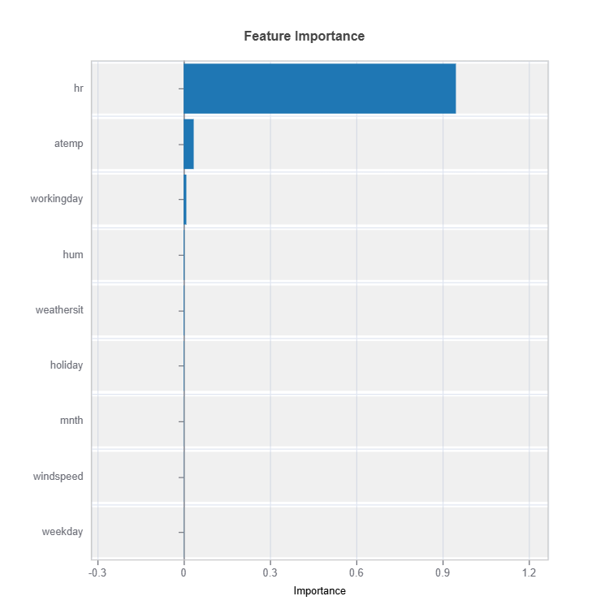
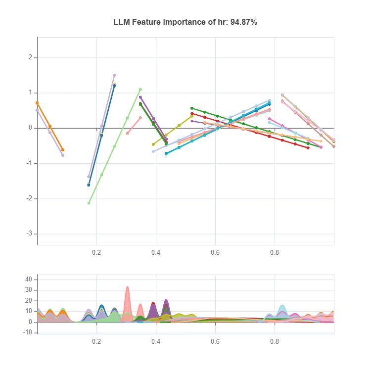
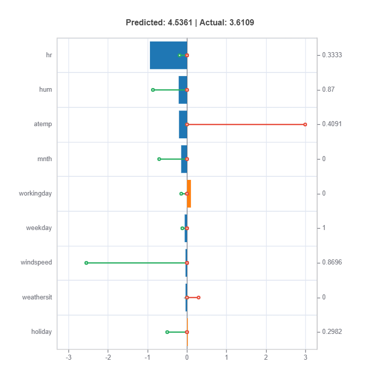

ReLU Neural Network#
Deep Neural Networks (DNNs) with ReLU activation functions have emerged as powerful models for complex pattern learning. While achieving remarkable predictive performance, they are often considered “black box” models due to their lack of transparency. This guide explains how to interpret ReLU DNNs and reduce their complexity through L1 regularization.
Model architecture#
Consider a feedforward ReLU network with inputs \(\textbf{x} \in \mathbb{R}^{d}\), \(L\) hidden layers, and one output neuron. Assume the \(l\)-th hidden layer has \(n_{l}\) neurons. In particular, we mark the input layer as a special hidden layer with index 0 (\(n_{0}=d\)). The weight matrix and bias vector of the \(l\)-th hidden layer to the \((l+1)\)-th hidden layer are denoted by \(\textbf{W}^{(l)}\) of size \(n_{l+1}\times n_{l}\), and \(\textbf{b}^{l}\) of size \(n_{l+1}\), respectively. Let \(\textbf{z}^{(l)}\) denotes the input of the \(l\)-th hidden layer. Then, the network can be recursively expressed by
where \(\chi^{(l)}\) is the output of the \(l\)-th hidden layer after the ReLU transformation
Finally, the output layer (i.e., the layer \(L + 1\)) is given by
where \(\textbf{b}^{(L)}\) is the bias of the output layer, and \(\sigma\) is the activation function, which can be identity (regression) or sigmoid (binary classification).
Local Linear Models (LLM)#
Despite the complex model form, the black box of deep ReLU networks can be unwrapped through local linear representations [Sudjianto2020]. First of all, let’s define the activation pattern.
Activation Pattern: Let the binary vector \(C=[C^{(1)}; \ldots; C^{(L)}]\) indicate the on/off state of each hidden neuron in the network. Specifically, the component \(C^{(l)}\) is called a layered pattern for \(l=1,\ldots,L\). The activation pattern \(C\) is said to be trivial if there is at least one \(C^{(l)} \equiv 0\) for some \(l\).
The length of the activation pattern is \(\sum_{i=1}^L n_l\), i.e., the total number of hidden neurons in the network. Each sample \(\textbf{x}\) corresponds to a particular activation pattern of the form
Data points that exhibit the same activation pattern can be grouped, and their input-output relationship can be simplified using a linear model, known as the local linear model (LLM). By disentangling the network, an equivalent set of LLMs can be obtained.
where \(\tilde{\textbf{w}}^{C(\textbf{x})}\) and \(\tilde{b}^{C(\textbf{x})}\) are the coefficients and intercept of the linear model, which can be obtained by some matrix operations of hidden layers weights and biases, considering the corresponding hidden neuron on/off states. The LLM extraction algorithm has been implemented in the Python package Aletheia, and most of its functionalities have been directly integrated into the Modeva package.
ReLU DNN in MoDeVa#
Data Setup
from modeva import DataSet
## Create dataset object holder
ds = DataSet()
## Loading MoDeVa pre-loaded dataset "Bikesharing"
ds.load(name="BikeSharing")
## Preprocess the data
ds.scale_numerical(features=("cnt",), method="log1p") # Log transfomed target
ds.scale_numerical(features=ds.feature_names, method="minmax") # standardized numerical features
ds.set_inactive_features(features=("yr", "season", "temp")) # deactivate some features
ds.preprocess()
## Split data into training and testing sets randomly
ds.set_random_split()
Model Setup
# For regression tasks
from modeva.models import MoReLUDNNRegressor
model_relunet = MoReLUDNNRegressor(name="ReLU_Net", hidden_layer_sizes=(40, 40), l1_reg=0.0002, learning_rate=0.001)
# For classification tasks
from modeva.models import MoReLUDNNClassifier
model_relunet = MoReLUDNNClassifier(name = "ReLU_Net", hidden_layer_sizes=(40, 40), l1_reg=0.0002, learning_rate=0.001)
Below we briefly introduce some of the most important hyperparameters in the ReLU-DNN model.
hidden_layer_sizes: a tuple used to specify the hidden layer structure, by default (40, 40), which means a ReLU-DNN with two hidden layers, each with 40 nodes. The hidden layer size is important for the model’s performance and interpretability. A small-sized ReLU-DNN may be of limited expressive power, and hence, poor model performance. However, if the network size is too large, the model can be extremely complicated and therefore hard to interpret. In practice, it is recommended to start with a relatively larger network size and then apply the L1 penalty to reduce its complexity.
l1_reg: the regularization strength that penalizes the weights, by default 1e-5. In each gradient descent iteration, it shrinks the network weights toward zero, while the bias terms keep unpenalized. Applying the L1 penalty to the network weights may avoid overfitting and enhance model interpretability. In practice, by increasing l1_reg, the resulting model tends to have a smaller number of LLMs.
learning_rate: a float that controls the step size of gradient descent, by default 0.001. The choice of learning rate is critical for model performance. A small learning_rate may result in an unnecessarily long training time, whereas a large one may make the training process unstable.
For the full list of hyperparameters, please see the API of MoReLUDNNRegressor and MoReLUDNNClassifier.
Model Training
# train model with input: ds.train_x and target: ds.train_y
model_relunet.fit(ds.train_x, ds.train_y.ravel())
Reporting and Diagnostics Setup
# Create a testsuite that bundles dataset and model
from modeva import TestSuite
ts = TestSuite(ds, model_relunet) # store bundle of dataset and model in fs
Performance Assessment
# View model performance metrics
result = ts.diagnose_accuracy_table()
# display the output
result.table
{kind=link}
Model Interpretation#
Once a ReLU-DNN model is trained. Then, it can be inherently interpreted.
LLM Summary Table#
# Summary of local linear models
result = ts.interpret_llm_summary()
# display the output
result.table
{kind=link}
For the full list of arguments of the API see TestSuite.interpret_llm_summary.
The table shows the summary statistics for each LLM, each row represents an LLM with the following statistics.
count: The number of training samples
Response Mean: The average of the response values
Local AUC: The local performance of this LLM in its local region
Global AUC: The global performance when using this LLM for all training samples
Such information can help model developers to have a better understanding of the trained ReLU-DNN model. For example, the first row indicates that the largest LLM has 5153 training samples, with an average response value of 0.105570, a local AUC of 0.584421, and a global AUC of 0.735054. From the results, we find that this LLM’s global performance is even better than its local performance, and a simpler model like GLM may be good enough.
Parallel Coordinate Plot#
The parallel coordinate plot displays the coefficients of local linear models.
# Parallel coordinate of LLM coeficients
result = ts.interpret_llm_pc()
# Plot the result
result.plot()
{kind=link}
For the full list of arguments of the API see TestSuite.interpret_llm_pc.
This plot is used for visualizing coefficients of different LLMs, where each line represents a single LLM. The x-axis shows feature names and the y-axis shows the coefficient values. As this is a static plot, we only plot the top 10 important features, see the Feature Importance Plot section for details. From the figure above, we can see that Pay_1 is the most important feature, with a wide range of coefficient values. The second and the third important variables are PAY_AMT1 and PAY_3, respectively.
In general, this plot can be roughly interpreted in the following way.
A feature is important when most of its coefficients (absolute values) are large. A feature is shown to have a monotonic increasing effect if all of its coefficients are positive and vice versa.
When most of the coefficients of a feature are close to zero, it is implied that this feature is trivial and probably can be removed.
When the range of the coefficients of a feature is large, it is implied that this feature may have a nonlinear effect on the final prediction.
Feature Importance Plot#
This global feature importance plot (with the keyword “global_fi”) visualizes the most important features in descending order.
{kind=link}
For the full list of arguments of the API see TestSuite.interpret_fi.
To calculate the feature importance, we first calculate the squared sum of LLM coefficients per feature; then the importance values are normalized such that their sum equals one.
LLM profile plot#
The local linear profile plot shows the marginal linear functions upon centering, and it requires the specification of feature to plot.
{kind=link}
For the full list of arguments of the API see TestSuite.interpret_llm_profile.
In this plot, each line represents an LLM. The x-axis shows unique values of the specified feature, and the y-axis is the marginal effect (coefficient times feature values) of that feature. To make this plot more elegant, we only visualize the top 30 LLMs and the marginal effects are all de-meaned.
Local Interpretation#
Individual Prediction Analysis#
The local feature importance plot (with the keyword “local_fi”) shows the prediction decomposition of a single training sample.
{kind=link}
For the full list of arguments of the API see TestSuite.local_linear_fi.
Components:
Stem: Direction and magnitude to prediction (regression coefficient)
Bar: Direction and magnitude of effects (both coeffcient and feature value)
Feature values for the sample
Comparison to average behavior
Centering Options
Uncentered Analysis (centered=False):
Raw feature contributions
Direct interpretation
May have identifiability issues
Centered Analysis (centered=True):
Compares to population mean
More stable interpretation
Better for relative importance